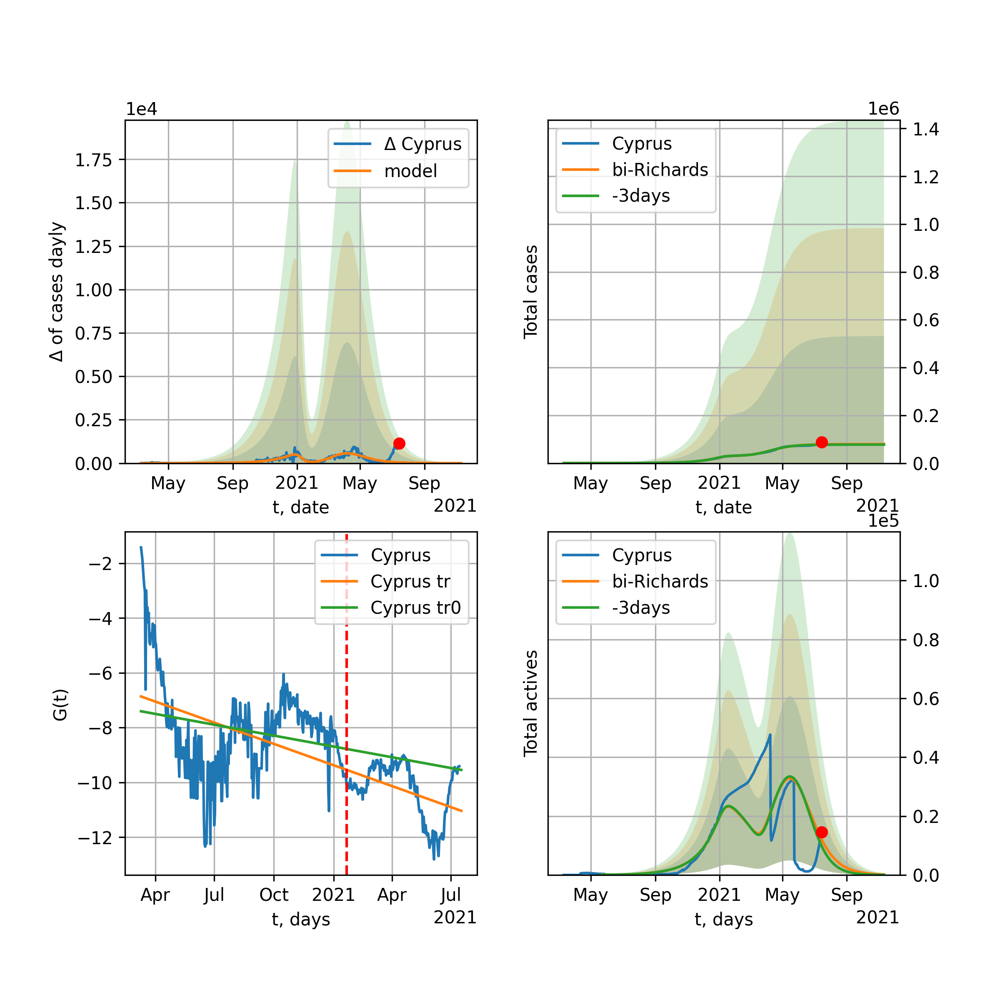

Multi-logistic model of COVID-19 dynamics
Model, code, results
Project maintained by algmaknick Hosted on GitHub Pages — Theme by mattgraham
World

World data at: 2020-05-24
+3 day model MAPE: 0.021163
model: bi-Richards
coeffs: [ 7.23931503e+06 3.16270284e+00 -4.40901248e+01 1.09472866e-02]
S.Korea scenario coeffs: [0.36242246, 2.56241634, 1.84890887, 0.13324732]
rational stdev: 0.247338
forecast at the end of period: +483 days
deltaDaycases: 5548
total cases: 9679724 ± 2394160
total death: 610003 ± 452630
bi-Richards approximation splitting point: 55
trend coefficient of determination: 0.357264
intercept: -1.911554
slope: -0.041543
trend coefficient of determination: 0.921614
intercept: -0.671066
slope: -0.031016
European Union

European Union data at: 2020-05-24
+3 day model MAPE: 0.009053
model: logisticQ
coeffs: [ 1.12872367e+06 5.07299018e-07 5.06797352e+01 -2.12354781e+05]
S.Korea scenario coeffs: [0.35416971, 0.02606324, 4.35859408, 19.30413219]
rational stdev: 0.426411
forecast at the end of period: +258 days
deltaDaycases: 14
total cases: 1528219 ± 651650
total death: 163542 ± 209208
trend coefficient of determination: 0.989277
intercept_: -3.119481295857833
coeffs_: [ 0. -0.31978531 0.00158231]
USA

USA data at: 2020-05-24
+3 day model MAPE: 0.011839
model: Richards
coeffs: [ 2.00683044e+06 4.25927441e+00 -5.91257433e+01 1.06974830e-02]
S.Korea scenario coeffs: [0.36242246, 2.56241634, 1.84890887, 0.13324732]
rational stdev: 0.339913
forecast at the end of period: +475 days
deltaDaycases: 269
total cases: 2716724 ± 923449
total death: 159965 ± 163122
trend coefficient of determination: 0.952872
intercept: -1.033824
slope: -0.044894
Spain

Spain data at: 2020-05-24
+3 day model MAPE: 0.003596
model: Richards
coeffs: [ 2.91489110e+05 9.32424417e+00 -5.20720146e+01 6.65461609e-03]
S.Korea scenario coeffs: [0.36242246, 2.56241634, 1.84890887, 0.13324732]
rational stdev: 0.230520
forecast at the end of period: +293 days
deltaDaycases: 116
total cases: 391552 ± 90260
total death: 39801 ± 27524
trend coefficient of determination: 0.950445
intercept: -0.721991
slope: -0.060467
Italy

Italy data at: 2020-05-24
+3 day model MAPE: 0.001332
model: Richards
coeffs: [ 2.35993082e+05 5.73618374e+00 -5.00403009e+01 1.04597757e-02]
S.Korea scenario coeffs: [0.36242246, 2.56241634, 1.84890887, 0.13324732]
rational stdev: 0.069683
forecast at the end of period: +265 days
deltaDaycases: 140
total cases: 314442 ± 21911
total death: 44849 ± 9375
trend coefficient of determination: 0.985268
intercept: -1.093793
slope: -0.057008
United Kingdom

United Kingdom data at: 2020-05-24
+3 day model MAPE: 0.002960
model: Richards
coeffs: [ 3.11509246e+05 3.44888312e+00 -5.71832038e+01 1.37841589e-02]
S.Korea scenario coeffs: [0.36242246, 2.56241634, 1.84890887, 0.13324732]
rational stdev: 0.128377
forecast at the end of period: +363 days
deltaDaycases: 151
total cases: 414730 ± 53242
total death: 58788 ± 22641
trend coefficient of determination: 0.957658
intercept: -1.401376
slope: -0.045622
France

France data at: 2020-05-24
+3 day model MAPE: 0.003222
model: Richards
coeffs: [1.80778365e+05 3.70818064e-01 1.70619041e+01 2.65939103e-01]
S.Korea scenario coeffs: [0.36242246, 2.56241634, 1.84890887, 0.13324732]
rational stdev: 0.338093
forecast at the end of period: +125 days
deltaDaycases: 163
total cases: 241305 ± 81583
total death: 37490 ± 38025
trend coefficient of determination: 0.948515
intercept: -2.346105
slope: -0.088619
Germany

Germany data at: 2020-05-24
+3 day model MAPE: 0.004197
model: Richards
coeffs: [ 1.78465381e+05 9.41224898e+00 -4.15707584e+01 8.63822739e-03]
S.Korea scenario coeffs: [0.36242246, 2.56241634, 1.84890887, 0.13324732]
rational stdev: 0.497862
forecast at the end of period: +195 days
deltaDaycases: 106
total cases: 239249 ± 119113
total death: 11106 ± 16587
trend coefficient of determination: 0.957756
intercept: -1.184416
slope: -0.066744
Turkey

Turkey data at: 2020-05-24
+3 day model MAPE: 0.006550
model: Richards
coeffs: [ 1.61772390e+05 5.90879570e+00 -3.51475608e+01 1.22111733e-02]
S.Korea scenario coeffs: [0.36242246, 2.56241634, 1.84890887, 0.13324732]
rational stdev: 0.238792
forecast at the end of period: +196 days
deltaDaycases: 229
total cases: 210244 ± 50204
total death: 5818 ± 4167
trend coefficient of determination: 0.780072
intercept: -0.982915
slope: -0.058258
Russia

Russia data at: 2020-05-24
+3 day model MAPE: 0.004852
model: Richards
coeffs: [5.01313325e+05 1.73938514e-01 2.98123165e+01 3.90598207e-01]
S.Korea scenario coeffs: [0.36242246, 2.56241634, 1.84890887, 0.13324732]
rational stdev: 0.181580
forecast at the end of period: +223 days
deltaDaycases: 397
total cases: 665059 ± 120761
total death: 6836 ± 3723
trend coefficient of determination: 0.986752
intercept: -4.106177
slope: -0.073947
Iran

Iran data at: 2020-05-24
+3 day model MAPE: 0.008958
model: bi-Richards
coeffs: [7.28107954e+04 4.84500220e+00 2.76534125e+01 1.54566606e-02]
S.Korea scenario coeffs: [0.36242246, 2.56241634, 1.84890887, 0.13324732]
rational stdev: 0.305006
forecast at the end of period: +307 days
deltaDaycases: 47
total cases: 199754 ± 60926
total death: 10917 ± 9989
bi-Richards approximation splitting point: 75
trend coefficient of determination: 0.949239
intercept: -0.938952
slope: -0.055516
trend coefficient of determination: 0.248108
intercept: -5.171413
slope: 0.009915
Brazil

Brazil data at: 2020-05-24
+3 day model MAPE: 0.039121
model: logisticQ
coeffs: [ 1.11009079e+06 8.09212285e-06 8.45578236e+01 -9.24563343e+03]
S.Korea scenario coeffs: [0.35416971, 0.02606324, 4.35859408, 19.30413219]
rational stdev: 0.398496
forecast at the end of period: +433 days
deltaDaycases: 77
total cases: 1501227 ± 598232
total death: 93498 ± 111775
trend coefficient of determination: 0.886720
intercept_: -4.248119692209693
coeffs_: [ 0. -0.27471854 0.00171889]

Brazil data at: 2020-05-24
+3 day model MAPE: 0.020679
model: Richards
coeffs: [1.47557590e+07 1.51626470e-01 3.73079030e+01 1.17953051e-01]
S.Korea scenario coeffs: [0.36242246, 2.56241634, 1.84890887, 0.13324732]
rational stdev: 0.355237
forecast at the end of period: +1063 days
deltaDaycases: 2833
total cases: 19617719 ± 6968934
total death: 1221820 ± 1302106
trend coefficient of determination: 0.195800
intercept: -2.671265
slope: -0.024730
Canada

Canada data at: 2020-05-24
+3 day model MAPE: 0.003118
model: Richards
coeffs: [ 1.07301311e+05 3.28945958e+00 -6.91436734e+01 1.32017751e-02]
S.Korea scenario coeffs: [0.36242246, 2.56241634, 1.84890887, 0.13324732]
rational stdev: 0.173913
forecast at the end of period: +420 days
deltaDaycases: 35
total cases: 143696 ± 24990
total death: 10898 ± 5685
trend coefficient of determination: 0.957432
intercept: -1.555879
slope: -0.045232
Belgium

Belgium data at: 2020-05-24
+3 day model MAPE: 0.002959
model: Richards
coeffs: [ 5.86622743e+04 1.58445805e+00 -2.06921502e+01 4.42592777e-02]
S.Korea scenario coeffs: [0.36242246, 2.56241634, 1.84890887, 0.13324732]
rational stdev: 0.625392
forecast at the end of period: +195 days
deltaDaycases: 53
total cases: 77589 ± 48524
total death: 12611 ± 23660
trend coefficient of determination: 0.947147
intercept: -1.432712
slope: -0.060792
Peru

Peru data at: 2020-05-24
+3 day model MAPE: 0.032461
model: logisticQ
coeffs: [ 1.62319968e+05 2.48412684e-06 5.96929601e+01 -3.71581717e+04]
S.Korea scenario coeffs: [0.35416971, 0.02606324, 4.35859408, 19.30413219]
rational stdev: 0.381481
forecast at the end of period: +237 days
deltaDaycases: 249
total cases: 213946 ± 81616
total death: 6163 ± 7053
trend coefficient of determination: 0.975412
intercept_: -3.8021583092910642
coeffs_: [ 0. -0.26944422 0.00165049]
Netherlands

Netherlands data at: 2020-05-24
+3 day model MAPE: 0.001720
model: Richards
coeffs: [4.62614644e+04 4.86779363e-01 2.28346579e+00 1.49771890e-01]
S.Korea scenario coeffs: [0.36242246, 2.56241634, 1.84890887, 0.13324732]
rational stdev: 0.151707
forecast at the end of period: +195 days
deltaDaycases: 25
total cases: 61991 ± 9404
total death: 7978 ± 3630
trend coefficient of determination: 0.974822
intercept: -1.680775
slope: -0.071579
India

India data at: 2020-05-24
+3 day model MAPE: 0.023284
model: Richards
coeffs: [ 2.31349842e+06 5.10721160e-01 -5.84109612e+01 3.34112678e-02]
S.Korea scenario coeffs: [0.36242246, 2.56241634, 1.84890887, 0.13324732]
rational stdev: 0.367085
forecast at the end of period: +1063 days
deltaDaycases: 653
total cases: 3030753 ± 1112543
total death: 87791 ± 96680
trend coefficient of determination: 0.527369
intercept: -1.769546
slope: -0.021277
Switzerland

Switzerland data at: 2020-05-24
+3 day model MAPE: 0.002612
model: logisticQ
coeffs: [ 3.00060494e+04 6.82917954e-07 2.59375867e+01 -2.11676923e+05]
S.Korea scenario coeffs: [0.35416971, 0.02606324, 4.35859408, 19.30413219]
rational stdev: 0.340363
forecast at the end of period: +83 days
deltaDaycases: 18
total cases: 40378 ± 13743
total death: 2503 ± 2555
trend coefficient of determination: 0.982446
intercept_: -3.907744516361138
coeffs_: [ 0. -0.30750077 0.00177798]
Ecuador

Ecuador data at: 2020-05-24
+3 day model MAPE: 0.008208
model: Richards
coeffs: [ 6.20361957e+04 1.61898815e+00 -7.69096116e+01 1.97193896e-02]
S.Korea scenario coeffs: [0.36242246, 2.56241634, 1.84890887, 0.13324732]
rational stdev: 0.309167
forecast at the end of period: +643 days
deltaDaycases: 8
total cases: 83742 ± 25890
total death: 7081 ± 6567
trend coefficient of determination: 0.206940
intercept: -2.060373
slope: -0.041536
Portugal

Portugal data at: 2020-05-24
+3 day model MAPE: 0.009905
model: Richards
coeffs: [ 3.09206477e+04 7.76275733e+00 -4.62886808e+01 8.39389334e-03]
rational stdev: 0.190720
forecast at the end of period: +223 days
deltaDaycases: 0
total cases: 30920 ± 5897
total death: 1328 ± 759
trend coefficient of determination: 0.897923
intercept: -0.885292
slope: -0.057685
Saudi Arabia

Saudi Arabia data at: 2020-05-24
+3 day model MAPE: 0.008430
model: Richards
coeffs: [ 2.99975534e+05 7.76173840e-01 -4.11815684e+01 3.37137298e-02]
S.Korea scenario coeffs: [0.36242246, 2.56241634, 1.84890887, 0.13324732]
rational stdev: 0.278218
forecast at the end of period: +671 days
deltaDaycases: 122
total cases: 394025 ± 109624
total death: 2117 ± 1766
trend coefficient of determination: 0.098711
intercept: -2.220427
slope: -0.015778
Sweden

Sweden data at: 2020-05-24
+3 day model MAPE: 0.007298
model: Richards
coeffs: [ 4.76620897e+04 2.13230233e+00 -6.72149321e+01 1.62444681e-02]
S.Korea scenario coeffs: [0.36242246, 2.56241634, 1.84890887, 0.13324732]
rational stdev: 0.265533
forecast at the end of period: +433 days
deltaDaycases: 39
total cases: 61205 ± 16251
total death: 7313 ± 5825
trend coefficient of determination: 0.840727
intercept: -1.378412
slope: -0.037178
Pakistan

Pakistan data at: 2020-05-24
+3 day model MAPE: 0.006787
model: Richards
coeffs: [ 9.41621893e+05 2.76738140e-01 -2.43635309e+01 5.95187769e-02]
S.Korea scenario coeffs: [0.36242246, 2.56241634, 1.84890887, 0.13324732]
rational stdev: 0.387661
forecast at the end of period: +1203 days
deltaDaycases: 129
total cases: 1259070 ± 488092
total death: 26075 ± 30324
trend coefficient of determination: 0.344602
intercept: -2.249971
slope: -0.019648
Ireland

Ireland data at: 2020-05-24
+3 day model MAPE: 0.005353
model: logisticQ
coeffs: [ 2.43039498e+04 1.69595652e-06 3.54295734e+01 -7.38365039e+04]
S.Korea scenario coeffs: [0.35416971, 0.02606324, 4.35859408, 19.30413219]
rational stdev: 0.316723
forecast at the end of period: +125 days
deltaDaycases: 29
total cases: 32422 ± 10268
total death: 2115 ± 2009
trend coefficient of determination: 0.982272
intercept_: -3.8669223794731913
coeffs_: [ 0. -0.26646703 0.00148609]
Mexico

Mexico data at: 2020-05-24
+3 day model MAPE: 0.018513
model: Richards
coeffs: [ 4.77304160e+05 5.80858867e-01 -5.81570081e+01 3.77755164e-02]
S.Korea scenario coeffs: [0.36242246, 2.56241634, 1.84890887, 0.13324732]
rational stdev: 0.153119
forecast at the end of period: +783 days
deltaDaycases: 178
total cases: 624473 ± 95618
total death: 67288 ± 30909
trend coefficient of determination: 0.862196
intercept: -1.971782
slope: -0.026413
Singapore

Singapore data at: 2020-05-24
+3 day model MAPE: 0.023882
model: bi-Richards
coeffs: [2.34342285e+04 9.92643706e+00 2.17362150e+01 7.79022819e-03]
S.Korea scenario coeffs: [0.36242246, 2.56241634, 1.84890887, 0.13324732]
rational stdev: 0.269476
forecast at the end of period: +293 days
deltaDaycases: 12
total cases: 40737 ± 10977
total death: 29 ± 23
bi-Richards approximation splitting point: 60
trend coefficient of determination: 0.125217
intercept: -2.318791
slope: -0.021609
trend coefficient of determination: 0.558985
intercept: -0.439973
slope: -0.028761
Chile

Chile data at: 2020-05-24
+3 day model MAPE: 0.033095
model: bi-Richards
coeffs: [ 6.67796815e+05 9.54447719e-01 -2.51965648e+00 3.33286161e-02]
S.Korea scenario coeffs: [0.36242246, 2.56241634, 1.84890887, 0.13324732]
rational stdev: 0.286333
forecast at the end of period: +748 days
deltaDaycases: 72
total cases: 919160 ± 263186
total death: 9550 ± 8203
bi-Richards approximation splitting point: 40
trend coefficient of determination: 0.015194
intercept: -2.191382
slope: -0.017169
trend coefficient of determination: 0.248549
intercept: -3.866407
slope: 0.009196
Israel

Israel data at: 2020-05-24
+3 day model MAPE: 0.001647
model: Richards
coeffs: [ 1.70189999e+04 5.40313830e+00 -3.44954982e+01 1.64825298e-02]
S.Korea scenario coeffs: [0.36242246, 2.56241634, 1.84890887, 0.13324732]
rational stdev: 0.157581
forecast at the end of period: +195 days
deltaDaycases: 4
total cases: 23035 ± 3629
total death: 384 ± 181
trend coefficient of determination: 0.931011
intercept: -1.033335
slope: -0.092679
Austria

Austria data at: 2020-05-24
+3 day model MAPE: 0.005004
model: logisticQ
coeffs: [ 1.56160363e+04 7.40102997e-07 2.38157778e+01 -2.49070117e+05]
S.Korea scenario coeffs: [0.35416971, 0.02606324, 4.35859408, 19.30413219]
rational stdev: 0.323627
forecast at the end of period: +69 days
deltaDaycases: 7
total cases: 21064 ± 6817
total death: 816 ± 792
trend coefficient of determination: 0.980579
intercept_: -2.8268749706800076
coeffs_: [ 0. -0.35035445 0.00235789]
Belarus

Belarus data at: 2020-05-24
+3 day model MAPE: 0.008447
model: Richards
coeffs: [ 6.08715897e+04 2.22691101e+00 -5.91735971e+01 1.95043644e-02]
S.Korea scenario coeffs: [0.36242246, 2.56241634, 1.84890887, 0.13324732]
rational stdev: 0.146757
forecast at the end of period: +363 days
deltaDaycases: 48
total cases: 79366 ± 11647
total death: 436 ± 191
trend coefficient of determination: 0.880696
intercept: -1.674838
slope: -0.043241
Japan

Japan data at: 2020-05-24
+3 day model MAPE: 0.004607
model: Richards
coeffs: [1.64106057e+04 1.10235272e-01 7.75671440e+01 1.21846679e+00]
S.Korea scenario coeffs: [0.36242246, 2.56241634, 1.84890887, 0.13324732]
rational stdev: 0.982454
forecast at the end of period: +153 days
deltaDaycases: 5
total cases: 22238 ± 21848
total death: 1101 ± 3245
trend coefficient of determination: 0.774320
intercept: -6.251865
slope: -0.096287
Qatar

Qatar data at: 2020-05-24
+3 day model MAPE: 0.004194
model: Richards
coeffs: [ 2.72577977e+05 5.16414264e-01 -4.76059263e+01 4.38566194e-02]
S.Korea scenario coeffs: [0.36242246, 2.56241634, 1.84890887, 0.13324732]
rational stdev: 0.494429
forecast at the end of period: +937 days
deltaDaycases: 28
total cases: 367658 ± 181780
total death: 193 ± 286
trend coefficient of determination: 0.001755
intercept: -3.212606
slope: -0.001248
Poland

Poland data at: 2020-05-24
+3 day model MAPE: 0.023937
model: Richards
coeffs: [ 2.75690490e+04 3.44355857e+00 -7.53587260e+01 1.11598599e-02]
S.Korea scenario coeffs: [0.36242246, 2.56241634, 1.84890887, 0.13324732]
rational stdev: 0.315381
forecast at the end of period: +405 days
deltaDaycases: 21
total cases: 35716 ± 11264
total death: 1668 ± 1578
trend coefficient of determination: 0.785084
intercept: -1.334850
slope: -0.039985
UAE

UAE data at: 2020-05-24
+3 day model MAPE: 0.028197
model: Richards
coeffs: [ 7.16186269e+04 8.92658486e-01 -7.41495536e+01 3.16218956e-02]
S.Korea scenario coeffs: [0.36242246, 2.56241634, 1.84890887, 0.13324732]
rational stdev: 0.177840
forecast at the end of period: +657 days
deltaDaycases: 16
total cases: 95847 ± 17045
total death: 796 ± 424
trend coefficient of determination: 0.831563
intercept: -2.132263
slope: -0.033476
Romania

Romania data at: 2020-05-24
+3 day model MAPE: 0.001766
model: Richards
coeffs: [ 2.13694974e+04 4.74346835e+00 -6.19156703e+01 1.00095915e-02]
S.Korea scenario coeffs: [0.36242246, 2.56241634, 1.84890887, 0.13324732]
rational stdev: 0.174784
forecast at the end of period: +335 days
deltaDaycases: 17
total cases: 27970 ± 4888
total death: 1834 ± 961
trend coefficient of determination: 0.911928
intercept: -1.246016
slope: -0.045745
Ukraine

Ukraine data at: 2020-05-24
+3 day model MAPE: 0.006040
model: Richards
coeffs: [ 2.98279105e+04 1.75650397e+00 -4.16175450e+01 2.56957479e-02]
S.Korea scenario coeffs: [0.36242246, 2.56241634, 1.84890887, 0.13324732]
rational stdev: 0.175649
forecast at the end of period: +363 days
deltaDaycases: 18
total cases: 39342 ± 6910
total death: 1156 ± 609
trend coefficient of determination: 0.712800
intercept: -1.441302
slope: -0.041911
Indonesia

Indonesia data at: 2020-05-24
+3 day model MAPE: 0.043228
model: Richards
coeffs: [ 5.74258634e+04 1.69326665e+00 -1.18527163e+02 1.39726401e-02]
S.Korea scenario coeffs: [0.36242246, 2.56241634, 1.84890887, 0.13324732]
rational stdev: 0.199547
forecast at the end of period: +671 days
deltaDaycases: 32
total cases: 73712 ± 14709
total death: 4541 ± 2718
trend coefficient of determination: 0.786698
intercept: -1.947133
slope: -0.029917
Bangladesh

Bangladesh data at: 2020-05-24
+3 day model MAPE: 299.967522
model: bi-Richards
coeffs: [ 2.55773789e+05 1.18429812e+00 -6.28424024e+01 2.02399385e-02]
S.Korea scenario coeffs: [0.36242246, 2.56241634, 1.84890887, 0.13324732]
rational stdev: 0.343678
forecast at the end of period: +811 days
deltaDaycases: 73
total cases: 339204 ± 116577
total death: 4844 ± 4994
bi-Richards approximation splitting point: 29
trend coefficient of determination: 0.035421
intercept: -4.295143
slope: 0.052172
trend coefficient of determination: 0.820771
intercept: -0.602907
slope: -0.037495
South_Korea

South Korea data at: 2020-05-24
+3 day model MAPE: 0.002865
model: bi-Richards
coeffs: [ 3.04211015e+03 1.97458370e-01 -5.56082036e+01 -9.64061093e+02 4.66554944e-04]
rational stdev: 0.116366
forecast at the end of period: +55 days
deltaDaycases: 0
total cases: 10948 ± 1273
total death: 260 ± 90
bi-logisticQ approximation splitting point: 25
trend coefficient of determination: 0.936460
intercept: -5.478818
slope: -0.338423
trend coefficient of determination: 0.510196
intercept: -12.555479
slope: -0.042955
Denmark

Denmark data at: 2020-05-24
+3 day model MAPE: 0.002893
model: Richards
coeffs: [ 1.20858242e+04 4.73015899e-01 -6.10098032e+00 1.18964858e-01]
S.Korea scenario coeffs: [0.36242246, 2.56241634, 1.84890887, 0.13324732]
rational stdev: 0.348252
forecast at the end of period: +195 days
deltaDaycases: 17
total cases: 15455 ± 5382
total death: 764 ± 798
trend coefficient of determination: 0.898782
intercept: -1.745728
slope: -0.057283
Serbia

Serbia data at: 2020-05-24
+3 day model MAPE: 0.014887
model: bi-Richards
coeffs: [ 1.35387629e+04 1.09477698e+00 -4.76968545e+01 2.21801167e-02]
rational stdev: 0.146729
forecast at the end of period: +195 days
deltaDaycases: 7
total cases: 23543 ± 3454
total death: 502 ± 220
bi-Richards approximation splitting point: 50
trend coefficient of determination: 0.693779
intercept: -1.241540
slope: -0.050152
trend coefficient of determination: 0.415934
intercept: -2.340097
slope: -0.042202
Kuwait

Kuwait data at: 2020-05-24
+3 day model MAPE: 0.046572
model: bi-Richards
coeffs: [2.37736351e+04 1.38930578e-01 7.70891404e+01 1.35283186e+00]
S.Korea scenario coeffs: [0.36242246, 2.56241634, 1.84890887, 0.13324732]
rational stdev: 0.161273
forecast at the end of period: +132 days
deltaDaycases: 30
total cases: 34544 ± 5571
total death: 252 ± 121
bi-Richards approximation splitting point: 25
trend coefficient of determination: 0.128202
intercept: -7.733584
slope: -0.093563
trend coefficient of determination: 0.930297
intercept: -7.129223
slope: -0.104732
Philippines

Philippines data at: 2020-05-24
+3 day model MAPE: 0.016473
model: Richards
coeffs: [ 1.83208424e+04 5.16157972e+00 -9.69430952e+01 7.29193158e-03]
S.Korea scenario coeffs: [0.36242246, 2.56241634, 1.84890887, 0.13324732]
rational stdev: 0.325983
forecast at the end of period: +419 days
deltaDaycases: 14
total cases: 23746 ± 7740
total death: 1468 ± 1435
trend coefficient of determination: 0.690538
intercept: -1.630745
slope: -0.040722
Norway

Norway data at: 2020-05-24
+3 day model MAPE: 0.001955
model: Richards
coeffs: [ 8.34521337e+03 5.85977273e+00 -3.80843043e+01 1.28484615e-02]
S.Korea scenario coeffs: [0.36242246, 2.56241634, 1.84890887, 0.13324732]
rational stdev: 0.169713
forecast at the end of period: +195 days
deltaDaycases: 5
total cases: 11133 ± 1889
total death: 313 ± 159
trend coefficient of determination: 0.940235
intercept: -0.894676
slope: -0.069857
Czechia

Czechia data at: 2020-05-24
+3 day model MAPE: 0.004443
model: bi-Richards
coeffs: [ 3.18882613e+03 2.96124601e+00 -8.17616639e+00 1.61568652e-02]
rational stdev: 1.158650
forecast at the end of period: +83 days
deltaDaycases: 3
total cases: 11030 ± 12780
total death: 387 ± 1345
bi-Richards approximation splitting point: 59
trend coefficient of determination: 0.403086
intercept: -1.485773
slope: -0.055131
trend coefficient of determination: 0.012764
intercept: -5.815515
slope: 0.007695
Colombia

Colombia data at: 2020-05-24
+3 day model MAPE: 0.024704
model: bi-Richards
coeffs: [ 4.25281216e+04 2.34225933e+00 -1.32960756e+01 2.06429240e-02]
S.Korea scenario coeffs: [0.36242246, 2.56241634, 1.84890887, 0.13324732]
rational stdev: 0.207416
forecast at the end of period: +363 days
deltaDaycases: 41
total cases: 60139 ± 12473
total death: 2064 ± 1284
bi-Richards approximation splitting point: 40
trend coefficient of determination: 0.748749
intercept: -1.033502
slope: -0.064236
trend coefficient of determination: 0.060612
intercept: -2.998090
slope: -0.004298
Australia

Australia data at: 2020-05-24
+3 day model MAPE: 0.001509
model: bi-Richards
coeffs: [ 9.31061813e+02 7.24472499e+00 -3.44774522e+01 8.39889226e-03]
S.Korea scenario coeffs: [0.36242246, 2.56241634, 1.84890887, 0.13324732]
rational stdev: 0.761187
forecast at the end of period: +55 days
deltaDaycases: 0
total cases: 7224 ± 5499
total death: 103 ± 235
bi-Richards approximation splitting point: 50
trend coefficient of determination: 0.756120
intercept: -0.978713
slope: -0.083615
trend coefficient of determination: 0.102573
intercept: -5.096390
slope: -0.019945
Malaysia

Malaysia data at: 2020-05-24
+3 day model MAPE: 0.012862
model: logisticQ
coeffs: [ 6.78444145e+03 4.86445915e-07 3.02620158e+01 -2.21069249e+05]
S.Korea scenario coeffs: [0.35416971, 0.02606324, 4.35859408, 19.30413219]
rational stdev: 0.331404
forecast at the end of period: +118 days
deltaDaycases: 3
total cases: 9118 ± 3021
total death: 144 ± 143
trend coefficient of determination: 0.877581
intercept_: -4.478300685953611
coeffs_: [ 0. -0.24266842 0.00155663]
Dominican Republic

Dominican Republic data at: 2020-05-24
+3 day model MAPE: 0.008271
model: Richards
coeffs: [ 3.14594485e+04 1.64488544e+00 -1.02644901e+02 1.66756806e-02]
S.Korea scenario coeffs: [0.36242246, 2.56241634, 1.84890887, 0.13324732]
rational stdev: 0.159409
forecast at the end of period: +657 days
deltaDaycases: 9
total cases: 41819 ± 6666
total death: 1294 ± 618
trend coefficient of determination: 0.699557
intercept: -2.014164
slope: -0.035044
Egypt

Egypt data at: 2020-05-24
+3 day model MAPE: 0.034460
model: Richards
coeffs: [ 3.18455870e+05 4.07366753e-01 -9.60457780e+01 3.45154070e-02]
S.Korea scenario coeffs: [0.36242246, 2.56241634, 1.84890887, 0.13324732]
rational stdev: 0.177362
forecast at the end of period: +1203 days
deltaDaycases: 95
total cases: 411776 ± 73033
total death: 18221 ± 9695
trend coefficient of determination: 0.556046
intercept: -2.381122
slope: -0.018523
Finland

Finland data at: 2020-05-24
+3 day model MAPE: 0.002595
model: Richards
coeffs: [ 7.62720357e+03 2.67960569e+00 -5.86652855e+01 1.73686624e-02]
S.Korea scenario coeffs: [0.36242246, 2.56241634, 1.84890887, 0.13324732]
rational stdev: 0.160693
forecast at the end of period: +335 days
deltaDaycases: 4
total cases: 10074 ± 1618
total death: 470 ± 226
trend coefficient of determination: 0.866821
intercept: -1.485258
slope: -0.050849
Morocco

Morocco data at: 2020-05-24
+3 day model MAPE: 0.012484
model: logisticQ
coeffs: [ 7.86452976e+03 1.39148250e-06 3.42522950e+01 -6.60799410e+04]
S.Korea scenario coeffs: [0.35416971, 0.02606324, 4.35859408, 19.30413219]
rational stdev: 0.275674
forecast at the end of period: +153 days
deltaDaycases: 5
total cases: 10522 ± 2900
total death: 281 ± 232
trend coefficient of determination: 0.967652
intercept_: -5.203881838229837
coeffs_: [ 0. -0.21661074 0.00144243]
Argentina

Argentina data at: 2020-05-24
+3 day model MAPE: 0.103631
model: Richards
coeffs: [ 7.59819088e+05 2.51232896e-01 -1.32393827e+02 3.58644926e-02]
S.Korea scenario coeffs: [0.36242246, 2.56241634, 1.84890887, 0.13324732]
rational stdev: 0.355117
forecast at the end of period: +2043 days
deltaDaycases: 108
total cases: 997089 ± 354082
total death: 37320 ± 39758
trend coefficient of determination: 0.023162
intercept: -2.938049
slope: -0.011829
Algeria

Algeria data at: 2020-05-24
+3 day model MAPE: 0.018732
model: logisticQ
coeffs: [ 1.12435409e+04 1.41016062e-06 4.59954987e+01 -4.52590337e+04]
S.Korea scenario coeffs: [0.35416971, 0.02606324, 4.35859408, 19.30413219]
rational stdev: 0.274182
forecast at the end of period: +209 days
deltaDaycases: 11
total cases: 14840 ± 4068
total death: 1072 ± 881
trend coefficient of determination: 0.948895
intercept_: -6.5130431545151595
coeffs_: [ 0. -0.18226218 0.00139665]
Luxembourg

Luxembourg data at: 2020-05-24
+3 day model MAPE: 0.003162
model: Richards
coeffs: [ 3.89905833e+03 1.85579592e+01 -3.56413501e+01 5.89849064e-03]
S.Korea scenario coeffs: [0.36242246, 2.56241634, 1.84890887, 0.13324732]
rational stdev: 0.243364
forecast at the end of period: +139 days
deltaDaycases: 2
total cases: 5251 ± 1278
total death: 144 ± 105
trend coefficient of determination: 0.655168
intercept: -1.666970
slope: -0.071805
Thailand

Thailand data at: 2020-05-22
+3 day model MAPE: 0.001225
model: Richards
coeffs: [ 3.00664512e+03 1.65800619e+01 -3.88427932e+01 7.34565903e-03]
S.Korea scenario coeffs: [0.36242246, 2.56241634, 1.84890887, 0.13324732]
rational stdev: 0.092027
forecast at the end of period: +113 days
deltaDaycases: 1
total cases: 4049 ± 372
total death: 74 ± 20
trend coefficient of determination: 0.843038
intercept: -1.320753
slope: -0.113844
Hungary

Hungary data at: 2020-05-24
+3 day model MAPE: 0.009263
model: Richards
coeffs: [3.93082688e+03 2.22581918e-01 1.74393230e+01 3.27642023e-01]
S.Korea scenario coeffs: [0.36242246, 2.56241634, 1.84890887, 0.13324732]
rational stdev: 0.158600
forecast at the end of period: +195 days
deltaDaycases: 2
total cases: 5262 ± 834
total death: 687 ± 326
trend coefficient of determination: 0.939319
intercept: -2.438266
slope: -0.072379
Greece

Greece data at: 2020-05-24
+3 day model MAPE: 0.006619
model: logisticQ
coeffs: [ 2.75310536e+03 5.46164087e-07 2.46742713e+01 -2.06211256e+05]
S.Korea scenario coeffs: [0.35416971, 0.02606324, 4.35859408, 19.30413219]
rational stdev: 0.269765
forecast at the end of period: +83 days
deltaDaycases: 2
total cases: 3680 ± 992
total death: 218 ± 176
trend coefficient of determination: 0.933480
intercept_: -3.646345364230833
coeffs_: [ 0. -0.26924016 0.00179029]
Iraq

Iraq data at: 2020-05-24
+3 day model MAPE: 0.058744
model: bi-Richards
coeffs: [ 9.85807216e+03 1.96973561e+00 -4.94116335e+01 1.72252594e-02]
S.Korea scenario coeffs: [0.36242246, 2.56241634, 1.84890887, 0.13324732]
rational stdev: 0.053495
forecast at the end of period: +461 days
deltaDaycases: 10
total cases: 13761 ± 736
total death: 492 ± 78
bi-Richards approximation splitting point: 40
trend coefficient of determination: 0.679258
intercept: -1.752791
slope: -0.061626
trend coefficient of determination: 0.034668
intercept: -4.073931
slope: 0.007187
Croatia

Croatia data at: 2020-05-23
+3 day model MAPE: 0.004627
model: logisticQ
coeffs: [ 2.17784053e+03 6.97908394e-07 2.72669836e+01 -1.94362634e+05]
S.Korea scenario coeffs: [0.35416971, 0.02606324, 4.35859408, 19.30413219]
rational stdev: 0.326187
forecast at the end of period: +98 days
deltaDaycases: 1
total cases: 2931 ± 956
total death: 129 ± 126
trend coefficient of determination: 0.976577
intercept_: -2.404367349053432
coeffs_: [ 0. -0.2613743 0.00142141]
Iceland

Iceland data at: 2020-05-23
+3 day model MAPE: 0.000064
model: logisticQ
coeffs: [ 1.80224861e+03 9.01466193e-06 1.33219646e+01 -1.96488584e+04]
rational stdev: 0.060227
forecast at the end of period: +28 days
deltaDaycases: 0
total cases: 1802 ± 108
total death: 9 ± 1
trend coefficient of determination: 0.940163
intercept_: -5.316007009995866
coeffs_: [ 0. -0.223166 0.00075878]
Estonia

Estonia data at: 2020-05-24
+3 day model MAPE: 0.001542
model: bi-Richards
coeffs: [ 3.26620706e+03 7.79885710e-01 -1.00643182e+01 3.42444381e-02]
rational stdev: 0.118776
forecast at the end of period: +223 days
deltaDaycases: 0
total cases: 4983 ± 591
total death: 174 ± 62
bi-Richards approximation splitting point: 50
trend coefficient of determination: 0.747031
intercept: -1.742697
slope: -0.078696
trend coefficient of determination: 0.067037
intercept: -7.583426
slope: 0.023348
Bulgaria

Bulgaria data at: 2020-05-24
+3 day model MAPE: 0.007593
model: Richards
coeffs: [3.19228864e+03 1.00200734e-01 2.27678079e+01 5.02219958e-01]
S.Korea scenario coeffs: [0.36242246, 2.56241634, 1.84890887, 0.13324732]
rational stdev: 0.138175
forecast at the end of period: +363 days
deltaDaycases: 0
total cases: 4325 ± 597
total death: 231 ± 95
trend coefficient of determination: 0.813495
intercept: -4.525578
slope: -0.061161
New Zealand

New Zealand data at: 2020-05-22
+3 day model MAPE: 0.001519
model: logisticQ
coeffs: [ 1.47962107e+03 2.71214807e-06 2.49844626e+01 -8.98056390e+04]
S.Korea scenario coeffs: [0.35416971, 0.02606324, 4.35859408, 19.30413219]
rational stdev: 0.293435
forecast at the end of period: +85 days
deltaDaycases: 0
total cases: 2002 ± 587
total death: 27 ± 23
trend coefficient of determination: 0.883800
intercept_: -3.5632902797090864
coeffs_: [ 0. -0.18087828 0.00022636]
Slovenia

Slovenia data at: 2020-05-23
+3 day model MAPE: 0.000237
model: Richards
coeffs: [ 1.48543609e+03 5.20174968e-01 -7.42021621e+00 1.68830305e-01]
S.Korea scenario coeffs: [0.36242246, 2.56241634, 1.84890887, 0.13324732]
rational stdev: 0.211962
forecast at the end of period: +126 days
deltaDaycases: 1
total cases: 1982 ± 420
total death: 143 ± 90
trend coefficient of determination: 0.919511
intercept: -1.449333
slope: -0.105393
Slovakia

Slovakia data at: 2020-05-23
+3 day model MAPE: 0.001843
model: logisticQ
coeffs: [ 1.49577761e+03 4.62012577e-04 2.38857902e+01 -2.64155707e+02]
S.Korea scenario coeffs: [0.35416971, 0.02606324, 4.35859408, 19.30413219]
rational stdev: 0.247937
forecast at the end of period: +112 days
deltaDaycases: 0
total cases: 2020 ± 501
total death: 37 ± 27
trend coefficient of determination: 0.915688
intercept_: -3.508037111126539
coeffs_: [ 0. -0.25409261 0.00149766]
Lithuania

Lithuania data at: 2020-05-24
+3 day model MAPE: 0.004159
model: bi-Richards
coeffs: [ 1.77989422e+03 1.35806916e+00 -3.76328723e+01 2.14958097e-02]
rational stdev: 0.173741
forecast at the end of period: +167 days
deltaDaycases: 0
total cases: 3214 ± 558
total death: 124 ± 64
bi-Richards approximation splitting point: 50
trend coefficient of determination: 0.883308
intercept: -0.942506
slope: -0.088969
trend coefficient of determination: 0.165204
intercept: -7.461784
slope: 0.034772
Latvia

Latvia data at: 2020-05-24
+3 day model MAPE: 0.012961
model: Richards
coeffs: [ 1.04442222e+03 1.00774311e+01 -6.71734624e+01 6.03506448e-03]
S.Korea scenario coeffs: [0.36242246, 2.56241634, 1.84890887, 0.13324732]
rational stdev: 0.244388
forecast at the end of period: +223 days
deltaDaycases: 1
total cases: 1349 ± 329
total death: 28 ± 20
trend coefficient of determination: 0.448029
intercept: -1.772908
slope: -0.053543
Cyprus

Cyprus data at: 2020-05-23
+3 day model MAPE: 0.000791
model: Richards
coeffs: [9.16901345e+02 3.56348047e-01 2.26564336e+00 2.92502145e-01]
S.Korea scenario coeffs: [0.36242246, 2.56241634, 1.84890887, 0.13324732]
rational stdev: 0.135676
forecast at the end of period: +84 days
deltaDaycases: 1
total cases: 1202 ± 163
total death: 22 ± 8
trend coefficient of determination: 0.772151
intercept: -2.681813
slope: -0.085024
Malta

Malta data at: 2020-05-24
+3 day model MAPE: 0.062265
model: bi-Richards
coeffs: [1.64348758e+02 1.45554257e-01 6.55079261e+01 2.75947894e+00]
rational stdev: 0.226519
forecast at the end of period: +27 days
deltaDaycases: 0
total cases: 625 ± 141
total death: 6 ± 4
bi-Richards approximation splitting point: 50
trend coefficient of determination: 0.907863
intercept: -8.871303
slope: -0.322252
trend coefficient of determination: 0.011728
intercept: -21.310246
slope: -0.012052
Sri Lanka

Sri Lanka data at: 2020-05-24
+3 day model MAPE: 0.050918
model: Richards
coeffs: [1.11104279e+03 6.27204531e-02 5.04909849e+01 2.24831898e+00]
S.Korea scenario coeffs: [0.36242246, 2.56241634, 1.84890887, 0.13324732]
rational stdev: 0.295643
forecast at the end of period: +83 days
deltaDaycases: 3
total cases: 1436 ± 424
total death: 11 ± 9
trend coefficient of determination: 0.709019
intercept: -9.853701
slope: -0.157831
References
- Worldometers COVID-19 Coronavirus Pandemic
- Su COVID-19 susijusi gyventojų ir verslo statistika
- Bi-logistic growth
- Least squares
- scikit-learn
- scipy.org
- European Centre for Disease Prevention and Control An agency of the European Union
- Aaron Miller, Mac Josh Reandelar, Kimberly Fasciglione, Violeta Roumenova, Yan Li, Gonzalo H Otazu, Correlation between universal BCG vaccination policy and reduced morbidity and mortality for COVID-19: an epidemiological study, https://doi.org/10.1101/2020.03.24.20042937